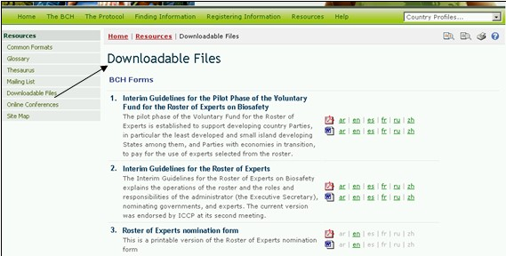

La página de Archivos para Descarga proporciona acceso a archivos destinados a ayudar a las Partes a cumplir con sus responsabilidades y requerimientos de información según el Protocolo. Ellos proporcionan igualmente el enlace a las directivas y a los patrones de ingreso de información.. Los Archivos para Descarga están disponibles en los formatos MS Word y en PDF en los seis idiomas oficiales de las Naciones Unidas. Y están agrupadas de la siguiente manera:
- los Formularios
- los Documentos de Bioseguridad
- la lista de Autoridades Nacionales Competentes y las listas de los Punto Focal Nacionales (actualizadas diariamente)
- los Informes de la Lista de Expertos (actualizada diariamente) y de sus estadísticas resumidas

Figura 52